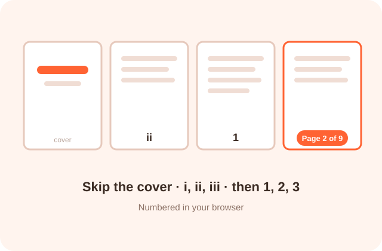

Number every page, skip the cover or start with i, ii for a thesis. See each page before you download.

To add page numbers to a PDF online with no sign up, drop the file into PDFdukan, choose where the number goes and how it reads, then tap Add page numbers. You get a new PDF with real text numbers on every page you picked, made in your browser.
The preview shows the exact number each page will carry, so you can check the cover and last page before you download.
The numbers are added as normal PDF text, not as an image, so readers can still search the document and the file stays small.
Choose 1, Page 1, 1 of 10, 1 / 10, - 1 -, i, I, a, or write your own text with {n} and {total}.
Start on any page, stop before the appendix and begin counting at any number, such as 25 for chapter two.
Give the first pages i, ii, iii, then switch to 1 for the body, all in one pass.
Mirror on even pages moves corner numbers to the outer edge of each printed sheet.
Add leading zeros and a prefix, like DOC-0001, for evidence bundles and audit files.
A white box behind the new number covers a wrong or duplicate number underneath.
| Item | Details |
|---|---|
| Input | PDF, up to 200 MB each, 20 files per batch |
| Output | Numbered PDF, or a ZIP for several files |
| Fonts | Helvetica, Times New Roman, Courier; bold; 6 to 36 pt |
| Style | Any color, 10 to 100% opacity, margin 0 to 40 mm |
| Locked PDFs | Restricted files work; password files need the password |
| Text | Latin letters and digits; other scripts show as ? |
Merge your files first, then add page numbers, so the count runs across the whole document. For a thesis, tap Thesis, set Roman pages first to the number of front pages, and check the first body page shows 1.
If a number lands on text or a footer line, raise the margin a few millimetres. For printed books, choose a bottom corner and tick Mirror on even pages so numbers sit on the outer edge.
Yes. PDFdukan reads each page’s rotation and visible area, so numbers stay upright and inside the page on landscape, rotated and cropped pages. In our tests, rotated pages in a mixed file kept their numbers at the bottom of the page as you see it. Scanned pages work too; the number is printed on top of the picture.
No. Your PDF is opened and numbered with pdf-lib and pdf.js inside your browser tab. Restricted files are unlocked with the open-source qpdf engine, also on your device. Nothing is sent to a server.
PDFdukan adds page numbers only, not running headers, dates or names on every page; for those, use Add Watermark with your text. It can’t open a PDF whose password you don’t know, and numbers in Urdu, Arabic or Hindi digits aren’t supported yet.
Yes. PDFdukan needs no account, adds no watermark and has no daily limit. Open the page, add your PDF and download the numbered copy.
Tap Skip cover, or set From page to 2. The cover stays blank and the second page shows 1. Change Start at if it should show another number.
Yes. Set Roman pages first to the number of front pages. Those pages show i, ii, iii and the body starts again at 1.
Choose Page 1 of 10 in Format. To leave the cover out of the total, set “of 10” counts to Only the numbered pages.
Only if the margin is too small. Check the preview, then raise the margin or move the number to the top of the page.
Yes. Add up to 20 PDFs. Each gets the same settings and its own count, and you download them together as a ZIP.
Yes for PDFs that only block editing; they are unlocked in your browser first. For a PDF that asks for a password to open, type its password.
Very little. PDFdukan uses the PDF’s built-in fonts, so a 300-page test file grew from 60 KB to 122 KB.
Connect Google Drive to save selected outputs to your own Drive storage. Review the destination before uploading sensitive documents.
No account? Sign Up free